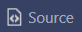
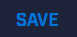

FAQ
How do I use the output to configure Better Mixer for my channel?
First open the edit description text editor, either on your channel page or in your dashboard. Then, click the  icon to edit your description in HTML mode.
Scroll down to the end of your description, and paste the output onto its own line (you may need to use shift+enter to create a new line). Then click  to apply the changes and refresh the page to see them.
If you ever want to change your settings, repeat this process but replace the output that was previously in your description with the new one.
Note: It may take a few seconds after editing your description for the changes to take effect. If your settings changes don't take effect, try waiting thirty seconds and then refreshing.
How does this work?
Though Mixer appears to let you edit the HTML source of your description, it does not actually allow you to put any HTML that you want.
In fact, the selection of permitted tags and attributes is actually quite limited. Fortunately,
img tags are allowed, as is the
alt attribute on those
img tags.
This allows me to use a 1x1 transparent pixel image with an
alt attribute containing relevant channel setting data.
The 1x1 transparent pixel image is invisible to users, but can be viewed in the DOM by Better Mixer, which reads the
alt attribute for relevant data.
Because a channel's description is accessible through Mixer's REST API, Better Mixer can even read channel settings for channels that the user is not currently on without needing to load that other user's entire channel in the background.
DOMParser is used for parsing a user's description when it's obtained from a GET reqest.
I keep seeing a message that says "An unknown error occurred." when I try to edit my description. How do I fix this?
For some reason, you may need to log out of Mixer and then log back in through your Microsoft account to edit your description if you see this message.
Source
Can I use someone else's Twitch username for syncing?
No. While there are currently no ways to enforce this policy, understand that it is against the terms of using Better Mixer,
and using someone else's Twitch accout for your own Mixer channel may result in some kind of punishment in the future.
This is still not allowed if you have permission from the owner of the Twitch account, but I am less likely to intervene in such a case.
I synced my Mixer and Twitch using the channel sync form. Do I need to use this new method?
All accounts that were synced before the introduction of the description-based self-service system have been grandfathered in and do not need to use this system in order to be synced.
However, the self-service system may still be used to edit settings or change the linked Twitch account.
If used, it will override your old sync, though you can still remove the self-service string from your channel description to fall back to the old system.
All channel settings added after the introduction of the self-service system will not apply if you stay on the old system.